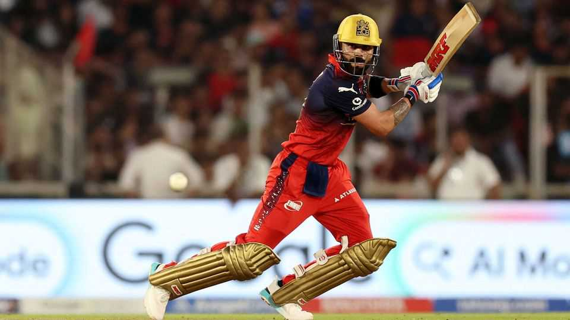

Private equity is coming for the Indian Premier League
The cricket tournament has proved hugely profitable

Jul 30th 2026
WHEN THE Indian Premier League (ipl) launched in 2008, the owners of the new cricket tournament’s city-based franchises were chiefly India’s glitterati. Bollywood stars and tycoons spent fortunes on these trophy assets. The involvement of such celebrities helped make the league a smashing success. Estimating viewership is tricky, but anywhere from 400m to 900m people regularly watch the matches.
Increasingly, however, Indian A-listers are vying with institutional capital from abroad. In March a consortium including Blackstone, an American private-equity (PE) giant, and Bolt Ventures, an investment vehicle run by David Blitzer, who owns stakes in various sports teams in America and elsewhere, acquired the Royal Challengers Bengaluru for $1.8bn. Now Temasek, a Singaporean sovereign wealth fund, is on the hunt for a team, according to Reuters. KKR, another American PE titan (not to be confused with the Kolkata Knight Riders), is also eager. In 2021 CVC, a European PE firm, bankrolled the launch of the Gujarat Titans. Last year it sold a two-thirds stake in the team to an Indian conglomerate for a hefty profit.
Foreign interest in the IPL is understandable. The Board of Control for Cricket in India (BCCI), which runs the league, made just $724m from the original auction. Houlihan Lokey, an investment bank, estimates that the IPL is now worth more than $20bn, reflecting the rapid rise of the Indian consumer.
Revenue chiefly comes from media rights. Broadcasters and streamers will pay top rupee for the matches, which last for three-and-a-half hours—speedy by cricket standards. They are one of the few spectacles that can guarantee a live audience, and ad slots command a big premium. And unusually for a big sports league, nearly half of viewers are women, making match days a family affair.
Scarcity is assured. The league has only ten teams, which negotiate media rights as a collective, and any expansion will be modest. There is no possibility of relegation. Costs are also contained. Unlike the English Premier League, where footballers’ wages can soak up a big chunk of revenues, player salaries are capped. Stadiums are provided by state governments and the BCCI.
India has few other trophy assets for its wealthiest to buy. There are far more billionaires per sports club in the country than in America, notes Siddharth Patel of CVC. But for India’s elite, the competition for teams is stiffening.■